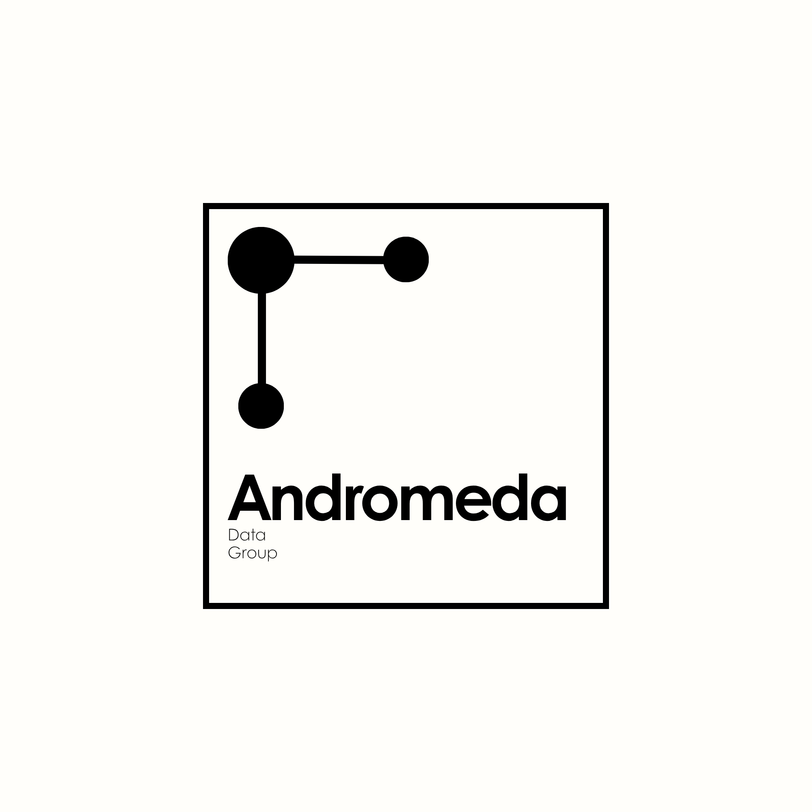

01
Campaign & voter analytics
Understand persuasion, turnout, geography and resource opportunity through validated models and practical audience segments.
Explore the service →Andromeda is a campaign-intelligence platform and analytics partner for progressive campaigns and nonprofit organizations. It brings voter, field, fundraising, polling, message, digital and performance data into one accessible system—so teams can understand what changed and decide what to do next.
A user-friendly platform backed by expert political-data services

Andromeda combines a central analytics workspace with expert data services, statistical modeling and political insight—organized for campaign teams, not data scientists.
Understand persuasion, turnout, geography and resource opportunity through validated models and practical audience segments.
Explore the service →Connect supporter, donor, volunteer and community signals to find meaningful patterns and growth opportunities.
Explore the service →Measure message response, public opinion and channel performance across the audiences that matter.
Explore the service →Bring CRM, field, fundraising, advertising, web and public data into consistent dashboards and reporting.
Explore the service →Andromeda Studio is the campaign-facing workspace for dashboards, maps, knowledge graphs, models, polling, field activity, fundraising, email, SMS and digital performance—without asking your team to replace every tool it already uses.
Shift the next field expansion toward precincts 14–19, where persuasion opportunity and contactability are both above benchmark.
Define the decision, audience, timeline and standard for a useful answer.
Organize the relevant data and establish a transparent analytical foundation.
Apply the right model, experiment or measurement approach for the question.
Deliver findings as audiences, priorities and decisions your team can use.
Tell us about your goals, current tools and biggest data challenge. We’ll shape a guided walkthrough around the decisions your team needs to make.